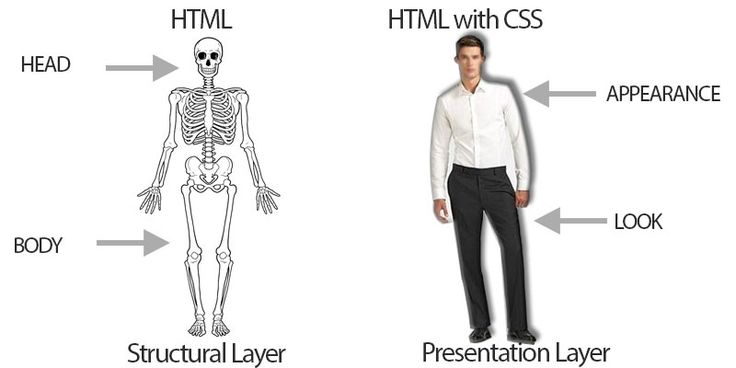
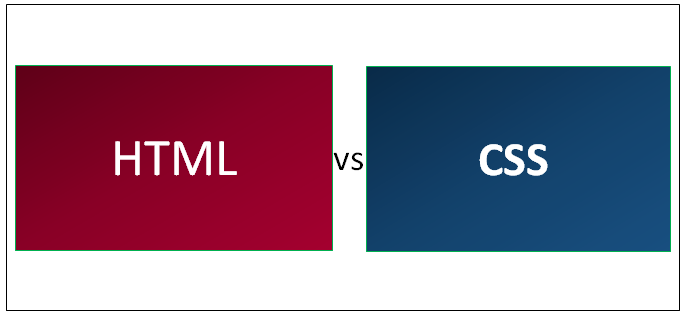

CSS, (Cascading Style Sheets), isa used to stylize a webpage. There are 3 methods to use CSS. They include external, internal/emedding, and inline. External links to an external CSS files. Internal/embedded CSS is generally used to stylize a single page. Inline CSS will add a CSS style to a specified tag. So, if you put class="redTextStyle" in your paragraph function, the entire paragraph would become red.
| Article on HTML VS CSS. |  | >Video on what is HTML/CSS. |
| HTML is the backbone of the website. |  | CSS is what makes the website pretty. |
| HTML provides the structure of the webpage. | |
CSS targets elements of the page and customizes them. |